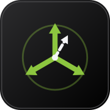

IAN-Monitor
iRLM-Zähler über die IAN-Schnittstelle auslesen – Werte, Zeigerdiagramm, Mitschnitt. Android-App.
APK herunterladen
Prüfe Version …
Die App gibt es nur für Android. Auf dem iPhone kann sie nicht installiert werden.
Installieren
- APK herunterladen antippen.
- Datei öffnen. Beim ersten Mal fragt Android nach „Unbekannte Apps installieren“ → für den Browser (bzw. „Eigene Dateien“) erlauben.
- Installieren tippen. Falls Play Protect warnt: „Trotzdem installieren“.
- Update: neue APK einfach drüber installieren – Einstellungen und Zuordnungen bleiben erhalten.
Vor Ort anschließen
- Access Point per Patchkabel an die IAN-Buchse des Zählers stecken und mit Strom versorgen.
- Der AP muss Adressen verteilen (DHCP), der Zähler holt sich seine IP automatisch.
- Handy mit dem WLAN des AP verbinden. Mobile Daten dürfen an bleiben – die App nutzt gezielt das WLAN.
- In der App Zähler suchen → gefundenen Eintrag antippen. Standard-Port ist
4059, mehrere Ports mit Komma (4059,4061). - Die Daten kommen im Push-Intervall des Zählers. Kommt nichts, ist der Push evtl. nicht aktiviert oder auf ein festes Ziel parametriert – dann Server-Modus probieren.
Ohne Zähler ausprobieren: in der App „Demo-Daten anzeigen“.
Was die App kann
WerteU, I, f, P, Q, cos φ, Zählerstände, Periodenwerte, Mittelwerte
ZeigerZeigerdiagramm, Drehfeld, φ und P je Phase, Hinweise auf Verpolung
Rohdatendekodiertes Telegramm, Hex-Mitschnitt zum Teilen
Ohne OBISWerte antippen und Größe + Skalierung zuordnen
Grenzen & Hinweise
- Nur unverschlüsselter DLMS-Push (FNN-Lastenheft iRLMSys, Stufe 1). Verschlüsselte Telegramme werden erkannt, aber nicht entschlüsselt.
- Viele Zähler schicken nur Werte ohne Kennzahlen. Dann einmal die Werte zuordnen – die App merkt sich die Zuordnung.
- Die Winkelrichtung (mathematisch oder im Uhrzeigersinn) ist je Hersteller unterschiedlich. Zeigt die App Linksdrehfeld, obwohl die Anlage rechts dreht, im Tab „Zeiger“ umstellen.
- Für die Anpassung an einen neuen Zählertyp: im Tab „Rohdaten“ Mitschnitt teilen und weitergeben.